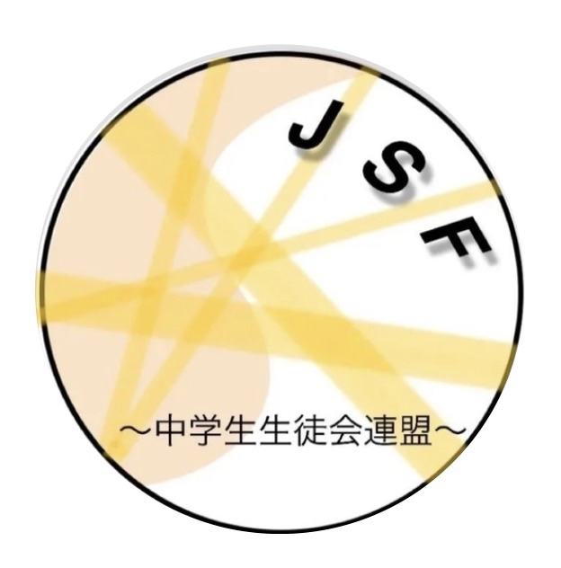

交流会
様々な学校の人を集め、班に分かれて設定した題材について話し合う交流会を実施。参加校の種類が多いため、多様な意見が出やすいのが特徴です。

Junior high school Student council Federation
中学生生徒会連盟（中生連）中生連は中学生が中心となって学び合い、学校の活動に生かせる視点と実践力を育むための連盟です。
現在、生徒会外務の交流会の場にて活動を行っている生徒のほとんどが高校生が主体となっています。そして、将来が長く、外務で学んだ事を長い期間学校の為に生かす事ができるはずの中学生、特に1～2年生の姿を見る事は滅多に無いでしょう。その為、中学生中心で運営し、中学生の為の交流会を開催するこの団体を作る事によって、それぞれの学校で、多様な考えを持ち、それを学校内の事に生かせる優秀な人材をいち早く育成する事がこの連盟の目標であります。
様々な学校の人を集め、班に分かれて設定した題材について話し合う交流会を実施。参加校の種類が多いため、多様な意見が出やすいのが特徴です。
学校ごとの取り組み、後輩との関わり方、引き継ぎ、一般生徒への周知方法など、実践的なテーマをもとに意見を出し合います。
他校の工夫や成功例を持ち帰ることで、自校だけでは得にくい発想を得て、学校内の活動へ生かすことを目指します。
現在、生徒会外務の交流会の場にて活動を行っている生徒のほとんどが高校生である。そして、将来が長く、今、外務で学んだ事を長い期間学校の為に生かす事ができるはずの中学生、特に1～2年生の姿を見る事は滅多に無い。その為、中学生中心で運営し、中学生の為の交流会を開催するこの団体を作る事によって、それぞれの学校で、多様な考えを持ち、それを学校内の事に生かせる優秀な人材をいち早く育成する事がこの連盟の目標であります。
今、生徒会外務の交流会の場には、男子校、女子校、共学、今自分たちの学校が取り組んでいる事をすでに成し遂げた学校や発展の途上にある学校、一部のやる気のある生徒が全員分の仕事をやる学校から最高学年から中学一年生まで、全ての生徒が意欲的に活動する学校まで、本当に多くの学校の生徒会の方がいます。そうした中から多くの人と知り合い、意見を出し合うと、自分の学校だけにこもっていては思いつかなかったような意見をたくさん聞く事ができます。どうやってこんな事を成し遂げたのか？後輩との関わり方は？引き続きはどうしてる？どうやったら活動を一般生徒に興味を持ってもらえる？などなど...本当に多くの興味深いアイデアがそこら中に落ちているのが外務の場だと考えます。
交流会：様々な学校の人を集め、班に分け、設定した題材について話してもらうタイプの交流会。参加する学校の種類が多い為、様々な意見が出やすい。